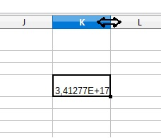
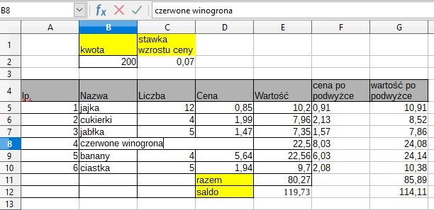
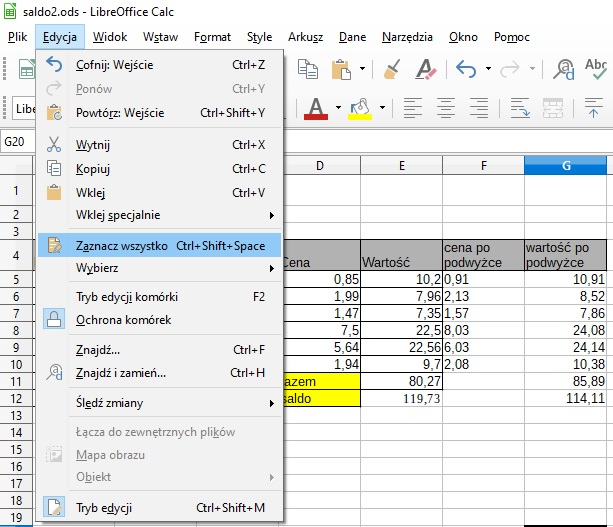
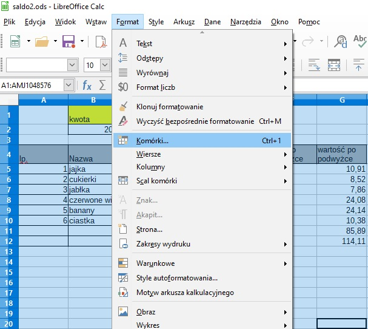
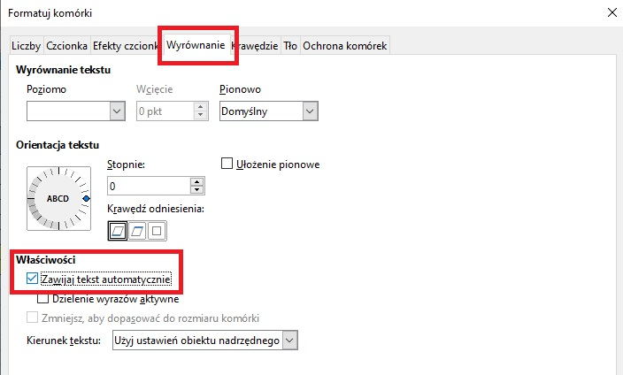

Ćwiczenia krok po kroku
Informatyka
Temat: Zmiana szerokości kolumn i wysokości wierszy tabeli.
Wprowadzanie do komórek długich tekstów i dużych liczb.
Otwórz swój plik Saldo2
Poćwicz zwiększanie szerokości kolumn
Ustaw kursor myszy u góry tabeli między literkami opisującymi kolumny, kursor z ukośnej strzałki zmieni się w poziommą podwójną strzałkę

Wykonaj ćwiczenie 4 i 5 ze str. 183 z epodręcznika
https://ebook.migra.pl/dlaucznia.php?book=67

W komórce gdzie były wpisane mandarynki wpisz czerwone winogrona.
Aby napis zmieścił sie w komórce bez poszerzania jej należy:
zaznaczyć tabelę

Na pasku menu kliknij w przycisk Format - Komórki...

W okienku dialogowym Formatuj komórki wybierz zakładkę Wyrównanie
we właściwościach w kwadraciku zaznacz Zawijaj tekst automatycznie
Kliknij OK

Plik zapisz jako saldo3 i go do mnie prześlij.
Powodzenia